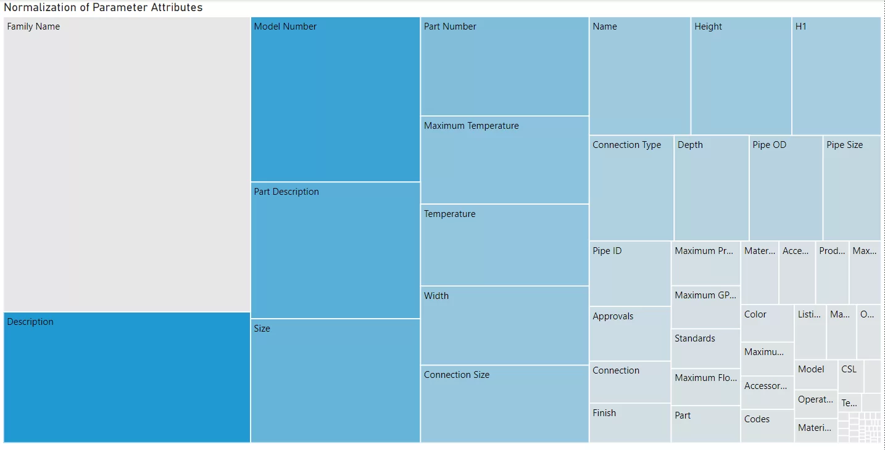

Data visualization can do more than just tell us what is in a set of files for BIM management, as we saw in Part 1 of this blog post.
It can tell you trends, insights, health stats, and more. This happens all the way from the manufacturing shop floor to construction on site to facility management. Just a quick Google search will tell lots of stories about data visualization in the industry: here, here, oh, and here.
The Bigger Picture
But what is the underlying message to all of this? Data can tell a story, and it’s up to us to tell the story the best we can. Otherwise, it’s just a bunch of…well…data.
How do we do that?
We need to think of the audience. If we don’t consider who is viewing the data, the message will be lost. How can you convey the message to someone who isn’t familiar with the data? Especially if you are trying to provide insight for the use of BIM content? It turns out that there are best practices for doing exactly that.
Many examples I have seen in Microsoft Power BI show a lot of information and colors all at once. That might be great for your own use behind the scenes.
I now invite you to consider some of the lessons I am learning through multiple avenues:
Coursera course on Data Visualization & Communication with Tableau
Best Practices training on LinkedIn Learning
MakeoverMonday community
Color Matters
Here is an example that shows estimated Christmas spending for 2019 in the UK as well as Europe. The example is obviously totally unrelated, but that is my goal for anything I do: to draw parallels from different domains and sources to provide new insight.
At first glance, you just see everything colored. What do the colors mean? Categories where spending occurred? Okay. But beyond that, what is a key message for why this data visualization was created?
*crickets*
This is where storytelling and color can come into play.
Storytelling with Data
What is the data telling you? Is there anything significantly different or interesting?
Almost every category has about the same amount of spending in both Europe and UK, except for one: gifts.
Why is there more estimated spending in UK in this category? This could warrant further research. Before you know it, there could be quite the insight behind why this has occurred. This is how you tell your data story.
The thing is, it’s difficult to see that when everything has its own color with no discernible purpose. For this reason, I have learned to be careful with color and draw attention to items with color.
If you must use more than one color to illustrate a specific data story, be mindful. The colors pink and red are very close together and therefore will hide any dramatic significance.
Also, there could be viewers who experience some form of being colorblind. Color choices like green and red might need to be reconsidered, depending on context, of course (Shaffer, 2016). More information regarding designing colorblind-friendly data visualizations can be found here.
Lack of Color Also Matters
That the lack of color also matters in a data visualization. Gray cuts out the “noise” and guides the viewer to where you actually want them to go.
From here, additional formatting embellishments could call out specific numbers and other annotations to further bring the point home.
Here is an example of what could make the first chart look a bit better.
For an industry specific example, we could revisit the treemap example I wrote about in Pt. 1 of this blog post series. Rather than having several colors with explanations about everything, we could use a diverging color scheme to point to the “medium sized” rectangles as a place to look in our standardization efforts.
Before - Treemap with No Color Consideration

After - Treemap with Mindful use of Color

I wrote more about this treemap and more in a more recent post here.
MakeoverMonday
Are there other ways to improve upon data visualizations? Absolutely! This is why I enjoy participating in what is called MakeoverMonday. This is a data community event where people are provided with publicly accessible data to create data visualizations. Participants can share their results on Twitter as well as Tableau Public. The one illustrated above came from just one of the data sets provided via the MakeoverMonday folks.
Here’s the fun part. MakeoverMonday provides a means to practice your skills in a fun and creative way. A book was even written about it, so you can get involved in a great community.
By being more mindful of your data and the communication surrounding it, I believe we can influence peers and decision makers in the AEC industry. Executing BIM projects provides us just one of multiple opportunities to utilize data for better insights. Whether you’re a CAD/BIM manager making things happen in the name of technology or a full blown data scientist or business analyst, we know it’s more than just a “pretty dashboard.” Let’s prove it.
Sources:
Deloitte United Kingdom. (2019). Deloitte Christmas Survey 2019. [online] Available at: https://www2.deloitte.com/uk/en/pages/consumer-business/articles/deloitte-christmas-survey-2019.html [Accessed 28 Dec. 2019].
Shaffer, J. (2016). 5 tips on designing colorblind-friendly visualizations. [online] Tableau Software. Available at: https://www.tableau.com/about/blog/2016/4/examining-data-viz-rules-dont-use-red-green-together-53463 [Accessed 28 Dec. 2019].